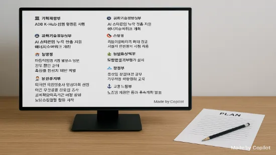

퍼블리크 정적웹사이트 전환 결과

1. 추진근거
2. 추진개요
- (추진기간) 2025. 11. 19. ~ 2026. 1. 2. (45일간)
- (투입인원) 초급기술자(정보처리기사) 1인
- (활용자원) pc, vscode 및 github.com 계정
- (주요내용) 정적웹사이트로의 전환 및 콘텐츠 구조화 등
3. 성과 및 시사점
3.1. 전환 총평
- 정적 웹사이트 구축툴로써 Hugo의 경우 개념검증과정에 오류가 없어 디버그의 부담이 적었고, 명확한 디렉토리 구조로 프로그램 이해가 용이
- 다만 테마에 따라 사용자화를 위한 설정 과정의 복잡성 차이가 존재
- Github.com에서는 특정 브랜치의 배포(publishing) 설정으로 하나의 리포지토리에서도 소스의 통합적 관리가 용이
- Front Matter 등 메타데이터 관리로 초기에는 콘텐츠 작성의 생산성이 낮았으나, 콘텐츠 생성환경에 대한 친숙도가 제고된 후, 분류 체계가 정립되고 콘텐츠 내용 구성에 집중할 수 있어 효과성 및 효율성 향상
3.2. 정적 웹사이트 생성 도구 선정
-
관련 기술 검토
구분 Hugo Docsify React 주요
용도블로그, 기업사이트
포트폴리오문서사이트
간단한위키대규모 상업용 웹앱 기반
기술Go JavaScript(mode.js) JavaScript, TypeScript 구현
난이도중간(설치후
메타정보 및 테마 구성)낮음
(html 스크립트 추가)높음
(빌드툴, 라우팅 설정 등)학습
곡선중간
(hugo구조 등 학습)낮음
(마크다운 이해)높음
(React 학습 등)배포 Github Pages Netlify, Vercel, GitHub Pages Vercel, Netlify, 클라우드 등 개발자
동향속도에 대한 만족감 높고,
테마도 다양속도문제로
이탈 케이스 다수프론트앤드
지배적 기술 등극 -
개념검증
- (Docsify) 랜딩페이지에 버그 발견되어 디버그 시도했으나 실패하였으며, 긴 내용의 md파일의 경우 랜더링시 지연 발생
- (Hugo) 100page를 대략 100ms로 랜더링했으며, 페이지수 증가에 랜더링 속도가 큰 영향을 받지 않는 것으로 관찰
- (React) 기술적 난이도가 높아 본 개념검증에서 제외
-
선정결과
- 정적 웹사이트 도입시 요구되는 기술적 한계와 2026년 사이트 게시라는 시간적 제약을 고려
- 구현난이도와 학습곡선에서 중간난이도 이하를 보인 Hugo와 Docsify를 대상으로 개념검증을 실시하여, 최종적으로 기술적으로 안정되고 랜더링 속도도 준수한 Hugo를 채택
3.3. 정적 웹 사이트 호스팅 선정
-
보유자원
구분 Github Cafe24 Netlify 비용 무료 유료 무료 운용현황 코딩 백업 웹앱테스트 미사용 배포방식 Github푸시 FTP Git 자동 + CI/CD지원 도메인보안 https지원 외부ssl지원 무료ssl지원 서버위치 Global Local Global 트래픽 100GB/월 48GB/월 100GB/월 자동화 불가 불가 자동 빌드•롤백•폼처리 등 풍부 -
검토사항
- (Github) 현재 코딩 백업 용도로 무료 운용 중이며, 정적웹사이트 운영 및 충분한 트래픽 제공 등의 문제는 없는 것으로 평가
- (Cafe24) 현재 phpwcms 1.9.47 테스트 서버로 유료 운용 중이며, php 와 MariaDB 등 동적웹개발을 위한 자원이 제공되며 1.6GB/일 트래픽 제공 등 정적웹사이트 운영에도 충분한 것으로 평가
- (Netlify) 현재 미 운용 중으로, 정적 사이트 + 서버리스 함수 조합의 “빠르고 안전한 정적 웹”에 “필요한 만큼의 동적 기능”을 붙이는 방식에 최적의 성능을 보이는 것으로 평가
-
선정결과
- 넓은 기술선택 측면에서는 서버사이드 자원을 제공하는 Cafe24가 우월한 선택으로 평가
- 반면 public.re.kr의 주요 기능을 자료관리에 두고 동적서비스는 외부 자원을 활용
- 의 폭을 널게 가져동적자원을 동시에 사용할 수 있는 Github을 이용할 경우, 버전 관리 외에도 gh-pages 같은 특정 브랜치로 정적 웹호스팅 서비스가 가능하고, Commit으로 배포가 용이하며, 트래픽 100GB/월 및 https 지원 등 기능적 요구사항을 충족하여 최종 선정
3.4. 외부 동적서비스 검토
- 고객문의(Contact Us)
- (목적) 사용자 커뮤니케이션
- (후보군) 네이버 폼, GoogleForm
- 국내 사용자를 고려 네이버폼을 채택하여, 주로 온라인 설문용으로 사용하는 폼서비스의 항목을 단순화하여 고객문의 형태로 이용
- 댓글시스템
- (목적) 사용자 커뮤니케이션 및 피드백
- (후보군) LiveRe, Disqus, Giscus, Utterances
- 사이트 속도 영향 및 개인정보 유출에 대한 이슈가 있어 영향평가 후 설치 검토
- 방문자 분석툴
- (목적) 사용자 행동 분석 및 기술적 개션
- (후보군) 네이버 애널리틱스, Google Analytics, Cloudflare Web Analytics
- 국내 사용자 동향 파악을 위해 네이버 애널리틱스 채택
- 방문자 카운터
- (목적) 웹사이트 신뢰성 제공 및 방문자 동기 부여 목적
- (후보군) Google Analytics, Hits.sh, Visitor Badge
- Google Analytics 정보를 API로 가져와 사이트바에 표시해 주는 방법이 기술적으로는 진보된 것으로 평가되나 구현과정이 복잡하여, 방문자 카운터 전용 서비스를 이용
- Hits.sh, Visitor Badge 서비스 비교 결과 카운터 이미지 스타일의 사용자화가 가능한 Hits.sh 채택
4. 향후계획
- 2026. 1. 31. 까지 메타데이터가 적용된 콘텐츠 이전을 완료하고, public.re.kr 도메인 매핑
- 본 계획이 콘텐츠 관리의 효율성 제고에 주안점을 두고 추진되었음을 감안, 랜딩페이지의 스핀오프 여부와 그에 따른 다음 사항에 대하여 3개월 운영 후 결정
- 콘텐츠 페이지와 랜딩페이지의 도메인 (분리)결정 (예: know.public.re.kr)
- (분리할 경우) 히어로 섹션과 랜딩페이지 디자인
- 랜딩페이지의 웹 플랫폼 선정